Fujimoto, hanya menulis
Ini karya pertama di mana Fujimoto hanya dikreditkan sebagai penulis cerita asli (原作). Gambarnya sepenuhnya oleh Oto Tōda.
ドアが開きます
Kereta terakhir pulang. Disarankan pakai earphone.
Tatsuki Fujimoto×Oto Tōda2022 · One-shot
Just Listen to the Song
Seorang cowok mengunggah lagu pengakuan cinta. Cewek itu menyebarkannya ke satu kelas. Lalu satu dunia mulai menafsirkannya. Padahal dia cuma minta satu hal.
Musik di sini dibangkitkan langsung di browser. Ini tafsiran blog ini, bukan lagu resmi.
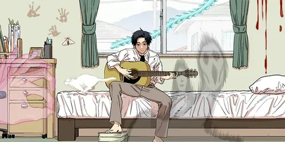
0:00 / 3:12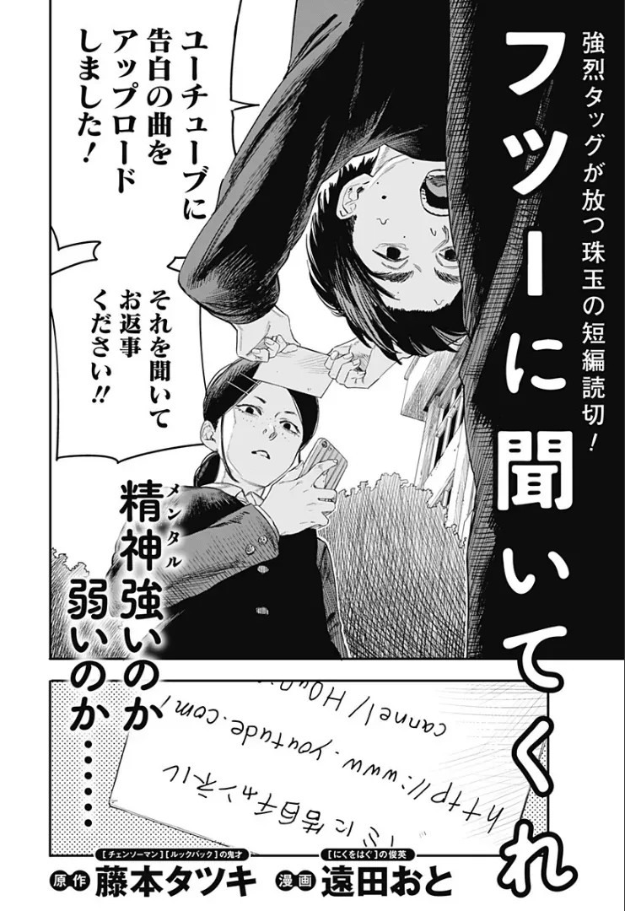
Ini karya pertama di mana Fujimoto hanya dikreditkan sebagai penulis cerita asli (原作). Gambarnya sepenuhnya oleh Oto Tōda.
Mantan asisten di Fire Punch dan pengarang To Strip the Flesh (にくをはぐ). Di sini Tōda menggambar dengan gaya yang sangat mirip gaya Fujimoto sendiri.
Terbit di hari yang sama dengan volume Goodbye, Eri, tepat setelah one-shot Fujimoto yang paling banyak dianalisis. Waktu terbitnya ikut jadi bagian leluconnya.
Tak satu pun tokoh di cerita ini punya nama. Fujimoto membiarkan semuanya sebagai peran, seperti orang asing di gerbong yang sama.
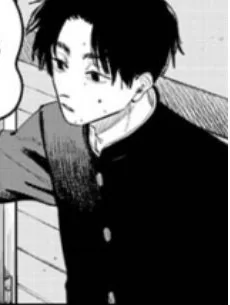
SEAT 01
Penulis lagu · 1 unggahan
Menulis lagu untuk cewek yang ia sukai sejak SMP, mengunggahnya, dan memintanya mendengar sebelum menjawab. Terus bersikeras lagunya tidak bermakna lebih dari yang terdengar.
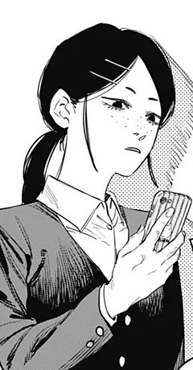
SEAT 02
Satu-satunya pendengar yang dituju
Berbintik di pipi, ponsel di tangan, sama sekali tidak terkesan. Menolaknya dan membagikan video ke kelas. Lalu ternyata dialah yang memahaminya.
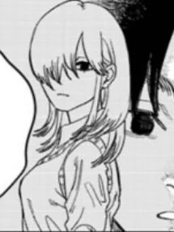
SEAT 03
Pengecoh
Muncul tiba tiba memperingatkan bahwa menghapus video akan mendatangkan kutukan. Dibingkai seperti tokoh kunci. Ternyata bukan. Pembaca pun ikut dipancing menafsir berlebihan.
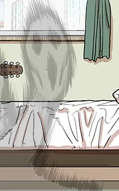
2:48
Figuran tak dikreditkan
Jeda video di detik yang tepat dan sesosok bayangan berdiri di belakangnya. Anomali pertama, dan alasan video itu meledak.
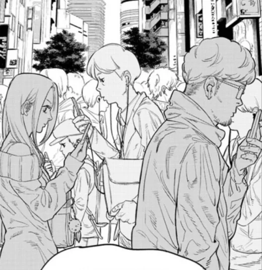
SEAT ∞
Semua orang lainnya
Kanal reaksi, penerjemah, orang yang memutarnya terbalik. Mereka mendengar segalanya di lagu itu kecuali lagunya.
Spoiler untuk dua pertiga awal. Akhir cerita ada di balik gerbang di stasiun berikutnya.
01 · UPLOAD
Di belakang gedung sekolah ia mengaku sudah menyukainya sejak SMP. Lalu, alih alih menunggu, ia menyodorkan secarik kertas: ia sudah mengunggah lagu pengakuan, bisakah didengar dulu sebelum menjawab? URL di kertas itu salah ketik.
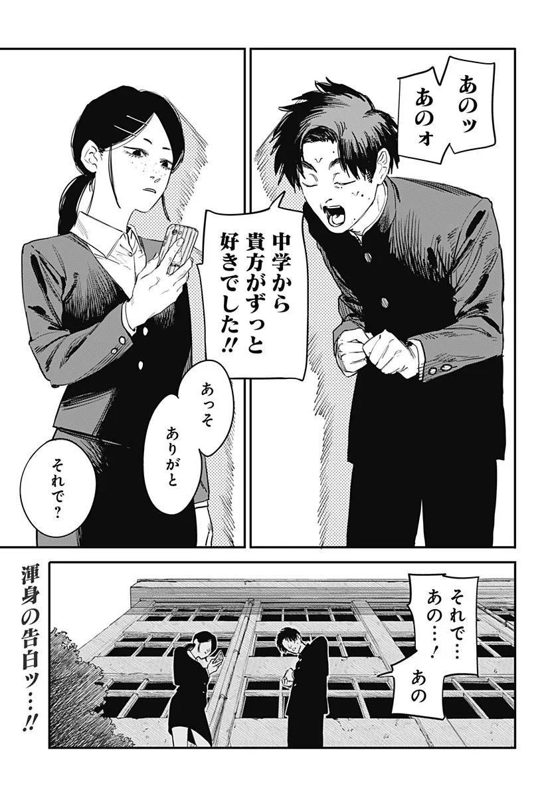
02 · SHARED
Besok paginya satu kelas sudah menonton. Ia mengunggahnya ke grup chat kelas, minta maaf dengan cara paling tidak menyesal, lalu menolak. Ia ingin segera menghapus videonya.
03 · 2:48
Seseorang menjeda video dan melihat hantu di belakangnya. Seorang cewek yang tak pernah ia kenal melarangnya menghapus video, atau ia akan dikutuk. Jadi video itu tetap tayang.
04 · VIRAL
Diputar terbalik, katanya kritik terhadap budaya senjata Amerika. Diterjemahkan ke bahasa Spanyol, katanya menyangkal Tuhan. Seekor kucing jadi matahari, sebuah buram jadi ikan langit. Kanal reaksi berdatangan dan jumlah penonton meledak. Ia terus bilang semua itu tidak ada di sana.
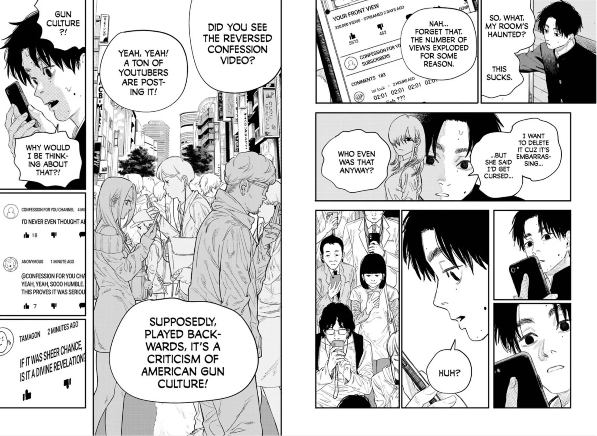
05 · SEQUEL
Didorong ibunya, ia mengunggah lagu kedua. Judulnya adalah judul manga ini. Semua yang terobsesi pada lagu pertama merasa bosan. Tak ada hantu, tak ada kode. Hanya lagu.
06 · DELETE
Maka ia menghapus kedua video. Tidak mengubah apa pun. Semua orang sudah mengunduhnya.
Mengunggah
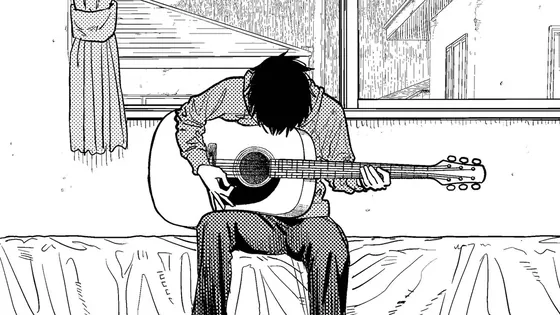
confession for you.mp4
0%www.youtude.com/channel/…
Kelas 2-B (34)
Just Listen to the Song (2)
penonton · · ·
Hapus video secara permanen?
01 / 06
Seni warna resminya adalah jebakan penuh “petunjuk”. Ketuk semuanya. Jadilah internet.
Seret melintasi senar (atau tombol 1 sampai 6) untuk ikut memetik. Akornya mengikuti lagu. Lirik aslinya tetap di manga; isinya tentang menggambar wajah seseorang dengan pensil.
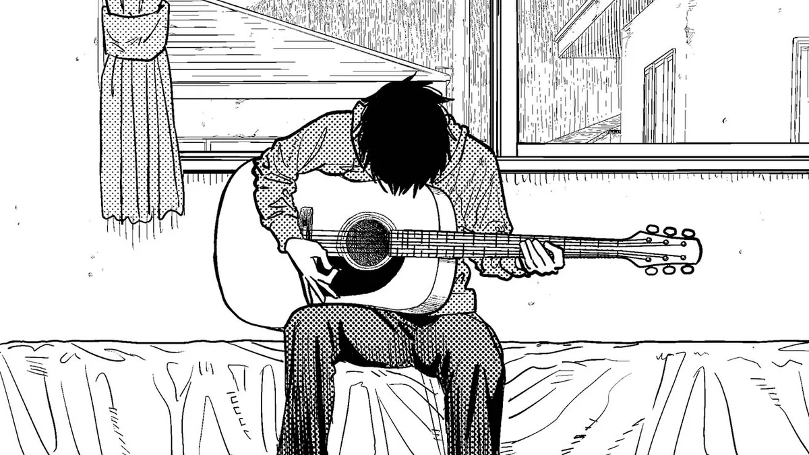
Just Listen to the Song
Confession for You Channel · instrumental (dibangkitkan)
次は 終点
Beberapa halaman terakhir adalah inti semuanya. Kalau belum membacanya, baca dulu (lima menit saja), lalu kembali.
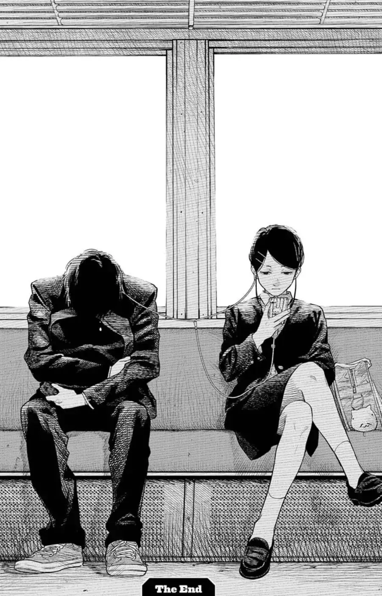
07 · THE END
Di kereta pulang ia duduk di sebelahnya, earphone terpasang, memutar lagu lagunya. Percuma dihapus, katanya; semua orang sudah mengunduh. Lalu ia menyebut apa sebenarnya isi lagu itu: hari ketika ia menggambar wajahnya di kelas seni SMP. Norak, katanya. Ia menyodorkan satu earbud.
Satu planet mendengar hantu, kode, dan politik. Satu orang yang menjadi tujuan lagu itu mendengar lagunya.
Ambil earbud yang ia sodorkan
Pakai earphone: lagunya hanya terdengar di telinga kananmu. Seperti dia.
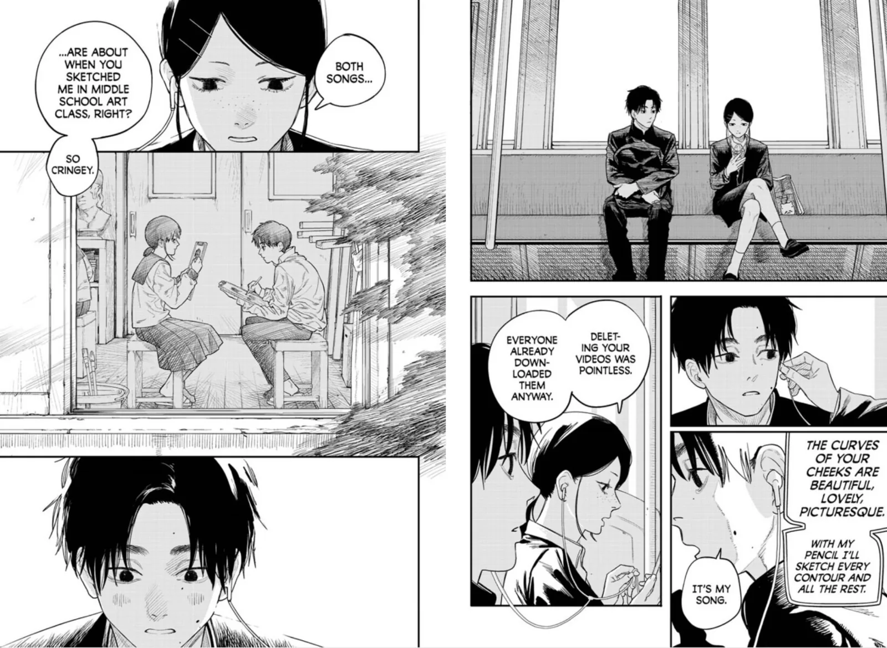
Ya, bagian tema untuk manga tentang menafsir berlebihan. Kami tahu. Empat lagu, yang pendek pendek.
Teori menumpuk sampai tak ada yang bisa mendengar hal yang sebenarnya. Leluconnya (budaya senjata, Tuhan, kucing matahari) sengaja absurd; kebiasaan di baliknya sangat nyata.
Lagu itu gagal di hadapan jutaan orang dan berhasil untuk tepat satu pendengar. Itu satu satunya tugasnya.
Terbit tepat setelah one-shot yang paling dibedah, rasanya seperti Fujimoto meminta pembaca sesekali menikmati saja. Para kritikus menyadari ironinya menganalisis karya ini juga.
Lagu kedua disebut gagal hanya karena penonton menulis cerita yang tak pernah dipilih si cowok.
Komentar 9 Urutkan: teratas
@fujimoto_archive · 2022
Kertas di halaman judul penuh salah ketik: youtude.com, chanel. Nama situsnya pun salah tulis.
@nanashi · 2022
Tak satu tokoh pun punya nama. Tidak cowoknya, tidak ceweknya, tidak juga cewek pemberi peringatan.
@page_count · 2022
Sekitar 20 halaman. Look Back dan Goodbye, Eri masing masing lebih dari seratus dan dua ratus halaman.
@title_drop · 2022
Lagu kedua si cowok memakai judul manga ini sendiri. Lagu yang “gagal” itulah lagu utamanya.
@color_page · 2022
Seni warna utamanya menyembunyikan semua anomali di depan mata: cap tangan, ngengat, ikan langit, hantu, kucing. Coba ruang anomali di atas.
@toda_fan · 2022
Pembaca terkejut betapa miripnya Tōda meniru gaya gambar Fujimoto. Kritikus membacanya sebagai memilih gaya yang dibutuhkan cerita.
@sekai_kakusan · 2022
Di puncaknya video itu mendunia sampai Presiden Amerika Serikat pun ikut berkomentar.
@last_train · 2022
Ceritanya berakhir di bangku kereta, bangku yang sama dengan yang kamu tumpangi sepanjang halaman ini.
@totally_real_offer · 1 min
MAU TAHU CARA MUDAH MENABUNG?? (yang ini dari panel di halaman depan, boleh diabaikan)
Komentar 9